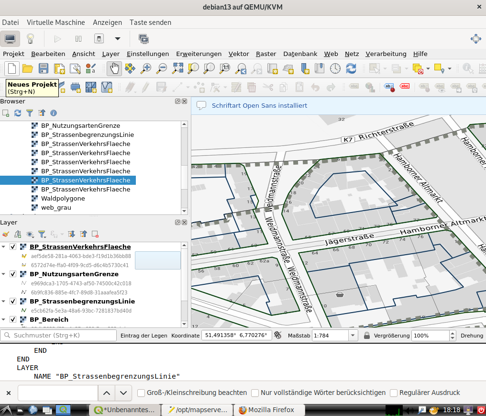

Diskussion / Offene Punkte
Rendering der vollvektoriellen Pläne
Hintergrundinformationen
Aktuell werden vollvektorielle Pläne nicht visualisiert. Um diese Pläne halbwegs ordentlich darstellen zu können, muss man eine einheitliche Zeichenvorschrift haben. Diese liegt derzeit nicht vor.
Im XPlanBox-Projekt gibt es SE-Dateien, die vom Deegree-Server genutzt werden, um die Zeichenvorschrift abzubilden: https://gitlab.opencode.de/diplanung/ozgxplanung/-/tree/main/xplan-webservices/xplan-webservices-workspaces/src/main/workspace/styles/xplansyn/default?ref_type=heads
Das QGIS-Plugin XPlanReader benutzt hierzu qml-Files: https://github.com/kreis-viersen/xplan-reader/tree/main/styles
Das ist alles noch WIP.
In der GDI-DE-Registry findet sich ein Verzeichnis mit SLD-Dateien aus dem Jahr 2024: https://repository.gdi-de.org/style/de.xleitstelle.xplanung/
Auch diese stellen nur einen kleinen Teil der benötigten standardisierten Styles zur Verfügung.
Umsetzung mit mapserver
Konfiguration
Im optimalen Fall kann man die GML-Dateien direkt mit einer Rendering-Engine visualisieren. Bei XPlanung-light bietet sich hierzu die Nutzung des integrierten Mapserver an. Ab der Version 8.2 kann man in den mapfiles Pfade zu SLD-Dateien und Symbolen angeben. Der Mapserver löst die Infomationen auf und wendet die Styles direkt auf die jeweiligen Layer an.
Beispielplan: https://opendata-duisburg.de/sites/default/files/780%20Alt-Hamborn.gml
Lokale Ablage der SLDs aus der GDI-DE-Registry
wget -r https://repository.gdi-de.org/style/de.xleitstelle.xplanung/
Bemerkung
Auszug aus einem mapfile mit SLD-Referenz:
#
LAYER
NAME "BP_StrassenVerkehrsFlaeche"
TYPE POLYGON
CONNECTIONTYPE OGR
CONNECTION "/opt/mapserver/data/780_Alt-Hamborn.gml"
DATA "BP_StrassenVerkehrsFlaeche"
METADATA
WMS_TITLE "BP_StrassenVerkehrsFlaeche"
WMS_SRS "EPSG:25832"
WMS_ABSTRACT "Testpolygon"
"wms_extent" "344972.646 5706529.6654 345513.2002 5706833.653"
END
VALIDATION
"sld_external_graphic" "^/opt/mapserver/data/repository.gdi-de.org/style/de.xleitstelle.xplanung/svg/home/user/mapserver/symbols/[a-zA-Z0-9_\-\.]+\.(png|jpg|svg)$"
END
PROJECTION
"init=epsg:25832"
END
STYLEITEM "sld:///opt/mapserver/data/repository.gdi-de.org/style/de.xleitstelle.xplanung/index.sld"
CLASS
NAME "BP_StrassenVerkehrsFlaeche"
STYLE
OUTLINECOLOR 0 255 0
WIDTH 2
END
END
END
#
Darstellung des Mapserver WMS in QGIS

Varianten
Transformation der xml-Files aus dem XPlanBox-Projekt oder aus den qml-Files des XPlan-Reader nach SLD - Nutzung von Geostyler-cli: https://github.com/geostyler/geostyler-cli
Definition eigener Styles für die jeweiligen Layer - das sind sehr viele ;-)